Plugin de Actividades
El plugin de actividades es
parte de la solución UML+ para la realización de
diagramas según la especificación UML 2.0. Los diagramas
de actividad pertenecen al conjunto de soluciones para el Ingeniero de
Sistemas.
Con este diagrama es
posible
modelar el comportamiento de un sistema mediante la
representación de flujos y ejecución de actividades.
Los elementos propios que
maneja este diagrama son:
- Actividad
- Objeto
- Región de Expansión
- Arreglo
- Estado Inicial
- Estado Final
- Decisión
- Barra de sincronización
- Partición
- Transición
- Enlace
Actividad: La actividad es el elemento clave de este diagrama. Para agregar una actividad se selecciona el icono Actividad.
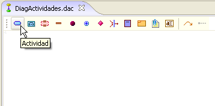
Figura 1. Creando una actividad
Al hacer clic sobre el icono aparecerá la venta de creación de una actividad, como se muestra en la Figura 2. El dato mínimo requerido para crear la actividad es un nombre diferente de "anonymus". Opcionalmente se pueden digitar los campos de Estereotipo, autor y versión. Es posible ajustar las propiedades del contenedor (visible y editable) junto con las propiedades del elemento de grafo.
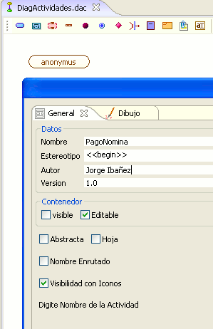
Figura 2. Datos de actividad
- Estereotipo
- Nombre del autor
- Versión
- Nombre de la actividad
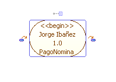
Figura3. Elemento actividad
Al crear una nueva
actividad de esta manera esta genera
automáticamente una transición sin etiqueta a una
nueva actividad vacía "anonymus"
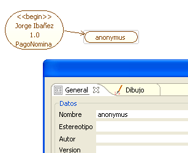
Figura 4. Creando actividades relacionadas
Objetos: Un objeto es la representación concreta o abstracta de una clase. La creación de un objeto puede estar basada en una clase de un Diagrama de Clases que este abierto actualmente dentro del entorno de trabajo, de donde tomará los atributos y las operaciones.

Figura 5. Clasificadores en diagrama de actividades
La clase plantilla para el objeto en el Diagrama de Actividades puede ser tomada como fuente de características de tres maneras diferentes, como Clase, Objeto o Combinado. Como clase el objeto en el diagrama tomará los atributos y las operaciones de la clase plantilla, mientras que como objeto solo generará la asociación a ese tipo sin tomar sus atributos ni operaciones.
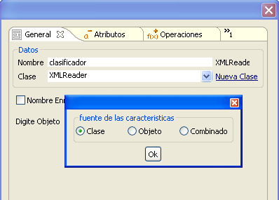
Figura 6. Asociando un clasificador a una fuente de características
Si no se tiene una clase plantilla desde un Diagrama de Clases, es posible crear una nueva clase propia, que será contenida en un Diagrama de Clases previamente creado.
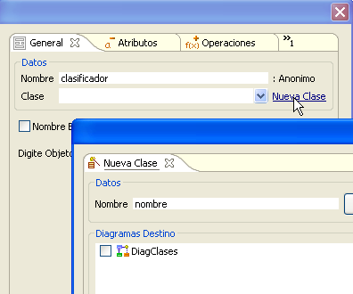
Figura 7 . Creando una clase plantilla
Al hacer clic en editar se abrirá una pantalla que contiene los elementos para la creación de una clase vistos en el Diagrama de Clases . En éste se podrá generar todos los elementos necesarios de la clase para que esta sea usada como plantilla para el objeto en el Diagrama de Actividades sobre el que se esta generando dicho elemento
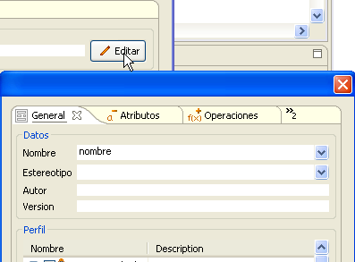
Figura 8. Agregando clase a usar como plantilla
Área de Expansión: El icono de área de expansión se encuentra en la primera división de tareas de la barra dentro del marco.
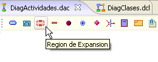
FIgura 9. Creando Área de expansión
El único dato requerido para generar un área de expansión es su nombre.
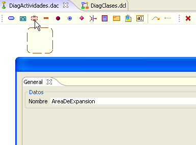
Figura 10. Datos de creación para el área de expansión
Estado Inicial: El estado inicial es el punto del cual va a partir el diagrama de actividades. Su icono de creación corresponde a un círculo rojo que se encuentra en la barra específica del marco de Diagrama de actividades.
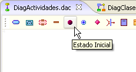
Figura 11. Creación del estado inicial
Al igual que con otros elementos de este marco el dato mínimo requerido para generar el elemento de Estado Inicial es un nombre diferente de anonymus. Adicional a esta las propiedades comunes del contenedor y el elemento gráfico. Junto con estas es posible agregar el estereotipo, autor y versión como se muestra en la Figura 12.
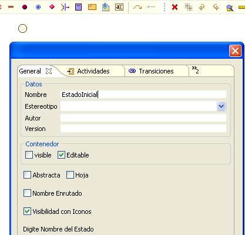
Figura 12. Datos de creación del estado inicial
Para el estado inicial es posible generar un conjunto de actividades, transiciones y particiones con las cuales esta asociado.
Estado Final: Es el estado en el cual el Diagrama de actividades que se esta trabajando finaliza. Corresponde al circulo azul en la barra específica del marco de actividades
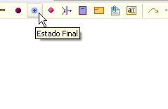
Figura 13. Creación del estado final
Al igual que con los otros elementos solo es necesario ajustar el nombre y opcionalmente al igual que con Estado de Inicio, las actividades y transiciones asociadas a este elemento.
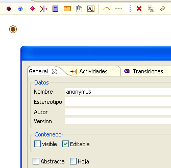
Figura 14. Datos de creación del estado final
Decisión: Una
decisión permite generar una división en el flujo de
actividades de acuerdo a una cierta condición. El icono correspondiente
en la barra específica del marco es el rectángulo rojo
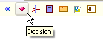
Figura 15. Creación de decisión
Partición: Una partición es un área independiente del Diagrama de Actividades donde se pueden ejecutar un conjunto de éstas, como parte de un flujo caracterizado o condicional del sistema. El icono de creación es una pequeña caja azul con una pestaña en su parte media superior
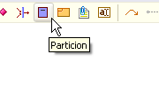
Figura 16. Creación de partición
El único dato necesario para crear una partición es su nombre. No existen datos opcionales a configurar en este caso.
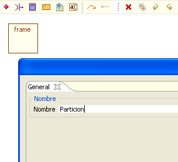
Figura 17. Dato para la creación de partición
Una vez creada la partición es posible cambiar su tamaño seleccionandola y moviendola a partir de la esquina inferior derecha
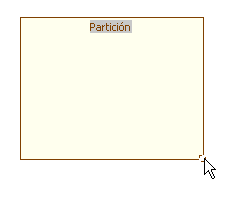
Figura 18. Redimensionando una partición
Los elementos existentes dentro del diagrama previo a la creación de la partición no podrán ser incluidos dentro de esta. Para crear un elemento dentro de la partición basta con hacer clic en el elemento deseado de la barra específica del marco y luego clic dentro del área de la partición. No es posible crear particiones dentro de las particiones
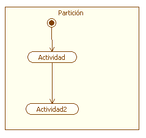
Figura 19. Creando elementos dentro de una partición
Transición La transición es uno de los elementos mas importantes del diagrama, ya que permite conectar las actividades, Estado de Inicio, Estado de Fin y todos los otros elementos del esquema. El icono de transición corresponde al de una flecha curva en la barra específica del marco
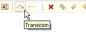
Figura 20. Creando transición
Para generar una conexión mediante una transición primero se debe hacer clic en el icono, posterior a esto se hace clic dentro del área de trabajo sobre el elemento origen, es decir, de donde proviene el flujo del diagrama
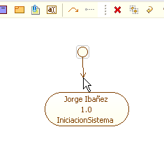
Figura 21. Generando transición a partir de elementos del diagrama
Posterior a esto se hace clic sobre el elemento destino, es decir, hacia donde se dirige el flujo. Uno vez hecho esto se abre el diálogo para generar los parámetros para dicha transición
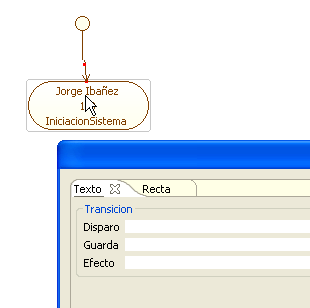
Figura 22. Ventana de ingreso de datos para creación de transición
Los parámetros de disparo, guarda y efecto son opcionales, la transición puede ser generada con ninguno o algunos de ellos. El disparo se presenta en primer lugar, la guarda se presenta entre corchetes cuadrados "[ ]" y por último el efecto se separa mediante "/"
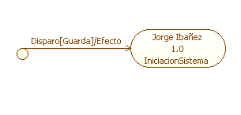
FIgure 23. Representación de disparo, guarda y efecto sobre una transición
Así como con otros elementos gráficos de conexion en UML+, es posible modificar la presentación de éste, tanto en color como en forma que se va a dibujar la conexión.